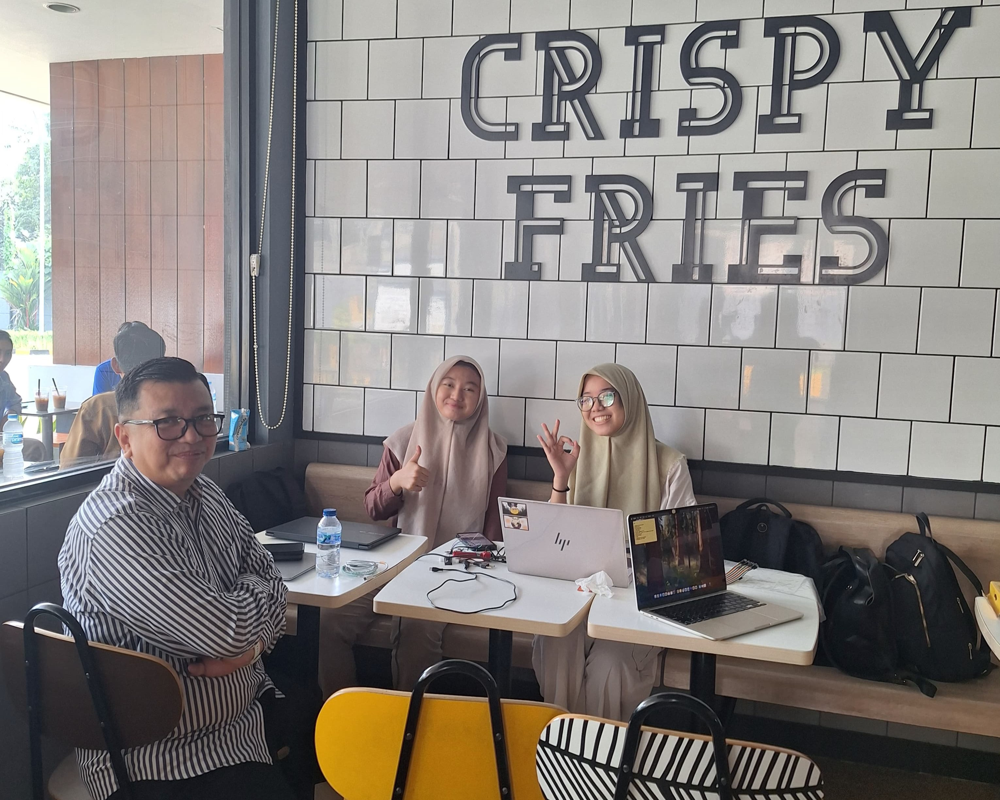
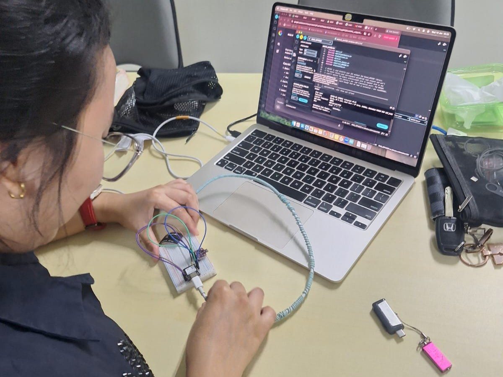
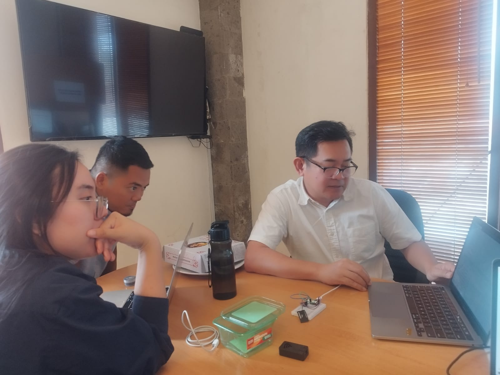

Potret kolaborasi aktif para relawan dalam memperluas cakupan jaringan sensor.

Relawan memberikan pengenalan dasar mikrokontroler Seeed XIAO kepada siswa SMK di Cisauk.

Pemasangan node sensor mandiri outdoor di area Kantor secara paralel.

Pertemuan bulanan anggota Bengkel Udara guna menyamakan persepsi data gas BME680.
Artikel edukatif, tips modifikasi alat, dan cerita inspiratif seputar lingkungan.
Desain casing khusus tipe louvers agar aliran udara luar tetap masuk namun sirkuit XIAO ESP32S3 aman dari percikan air hujan badai.
Langkah menambahkan baterai LiPo 18650 dan solar cell 5V agar perangkat pemantau udara Anda tidak bergantung pada colokan listrik rumah.